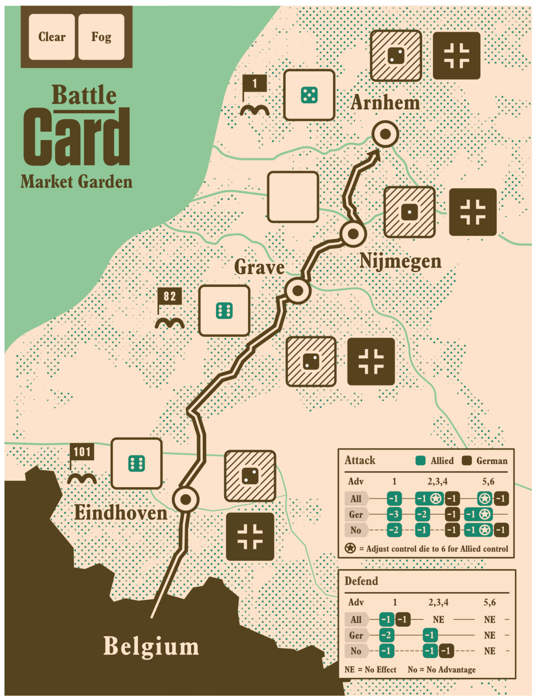

{kind=link}

1
放置骰子、选择行动，带领 30 Corps 抵达 Arnhem。游戏介绍

在盟军的「市场花园行动」期间，盟军试图夺取荷兰的重要桥梁并绕过德军防线。玩家扮演盟军指挥官，必须建立一条从比利时到 Arnhem 的连续补给线。
| 结果 | 条件 |
|---|---|
| 胜利 | 30 Corps 进入 Arnhem |
| 失败 | 任意盟军单位被消灭（Strength < 1） |
| 失败 | Turn Die > 6 |
4 个关键地点呈线性排列：
Belgium → Eindhoven → Grave → Nijmegen → Arnhem
30 Corps 从 Belgium 出发。
| 字段 | 含义 |
|---|---|
allied_unit | 盟军单位强度 |
german_unit | 德军单位强度 |
control | 1=德军控制, 6=盟军控制, 默认德军控制 |
每个地点有一个 Control Die，范围 1（德军）或 6（盟军）。
| 地点 | German Unit | Allied Unit |
|---|---|---|
| Arnhem | 2 | 5 |
| Nijmegen | 1 | — |
| Grave | 2 | 6 |
| Eindhoven | 2 | 6 |
| 单位 | 部署地点 |
|---|---|
| 101st Airborne | Eindhoven |
| 82nd Airborne | Grave |
| 1st Airborne | Arnhem |
| 项目 | 位置 |
|---|---|
| 30 Corps | Belgium |
| Turn Die | Fog（两个面：Clear / Fog） |
开始游戏时掷 1d6，将修正应用到所有盟军空降单位。
| 骰值 | 修正 |
|---|---|
| 1~2 | -2 |
| 3~4 | -1 |
| 5~6 | 0 |
例：1st Airborne = 5，掷出 2 → 5 - 2 = 3
Battle → German Reinforcement → Allied Advance → 1st Airborne Reinforcement → Advance Turn
重复直到胜负产生。
玩家在每个地点选择攻击（Attack）或防御（Defend），逐个地点结算。
比较双方强度，高者获得 Advantage。
| 优势 | 1 | 2,3,4 | 5,6 |
|---|---|---|---|
| All | -1 Allied | -1 Allied, -1 German, Allied 控制 | -1 German, Allied 控制 |
| Ger | -3 Allied | -2 Allied, -1 German | -1 German, Allied 控制 |
| No | -2 Allied | -1 Allied, -1 German | -1 German, Allied 控制 |
| 优势 | 1 | 2,3,4 | 5,6 |
|---|---|---|---|
| All | -1 German, -1 Allied | No Effect | No Effect |
| Ger | -2 Allied | -1 Allied | No Effect |
| No | -1 Allied | -1 Allied, -1 German | -1 German |
| 阵营 | 规则 |
|---|---|
| 德军 | 最小强度 = 1，不能被消灭 |
| 盟军 | Strength < 1 则立即被消灭（游戏失败） |
从 Arnhem 开始往下检查，其德军单位 Strength + 1。
如果德军被消灭了，无法增援。
仅当 Arnhem 在德军控制下时，Nijmegen 的德军才增加。
玩家可移动：30 Corps 或任意盟军单位。
掷 1d6，若 d6 <= Turn Die，则 1st Airborne +1 Strength，并把 Turn Die 移到 Clear。
此强化只能发生一次，完成后跳过此步骤。
Turn Die += 1
| 条件 | 结果 |
|---|---|
| 30 Corps 到达 Arnhem | 立即胜利 |
| 任意盟军单位 Strength < 1 | 立即失败 |
| Turn Die > 6 | 立即失败 |